PAGE 5
Here's a bunch of random things I made when I was bored.
Why, you ask? Why not?
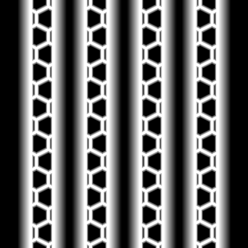 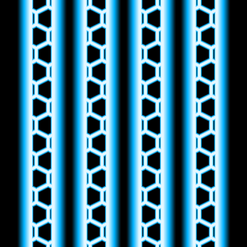 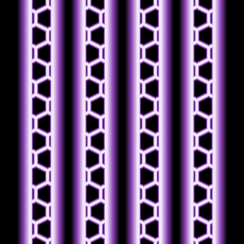 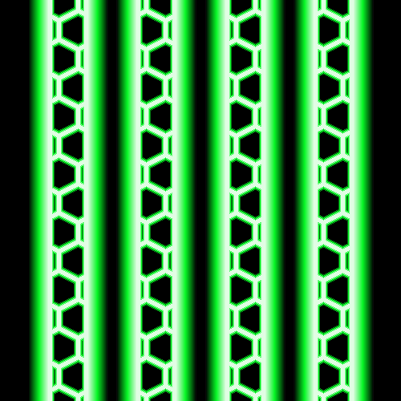 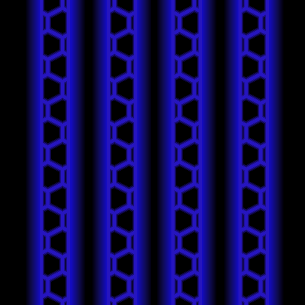 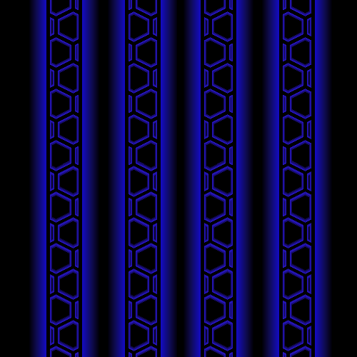 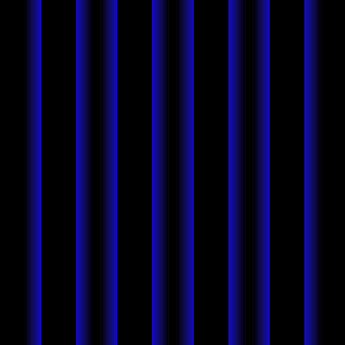 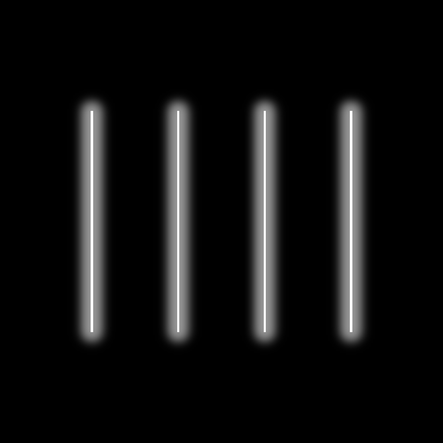And yes, that one with an actual gradient was made with CSS Box Shadows, because I cannot paint gradients for the life of me.
Why, you ask? Why not?
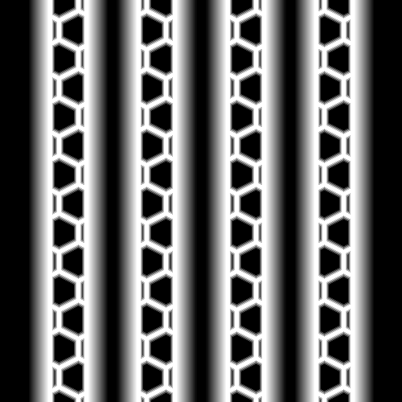 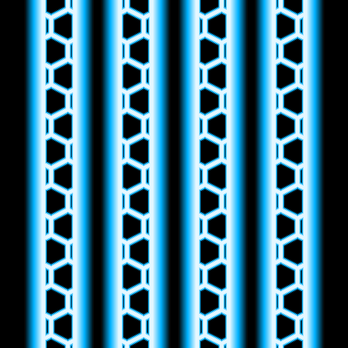 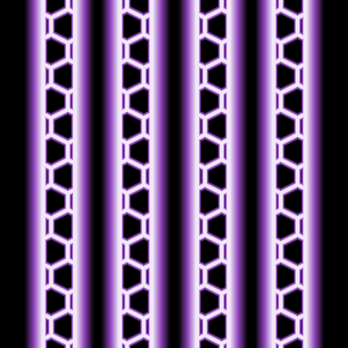 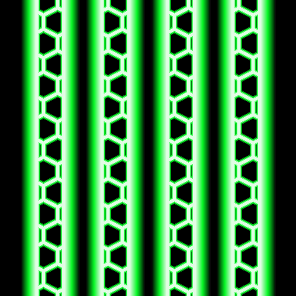 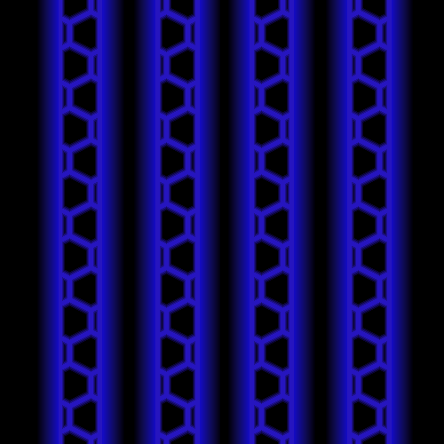 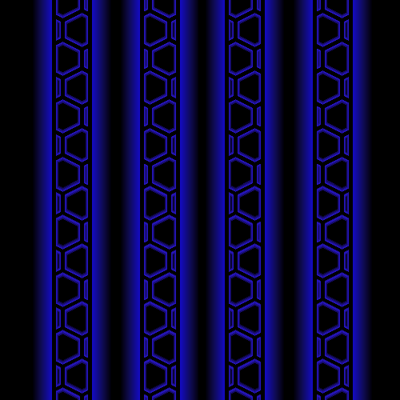 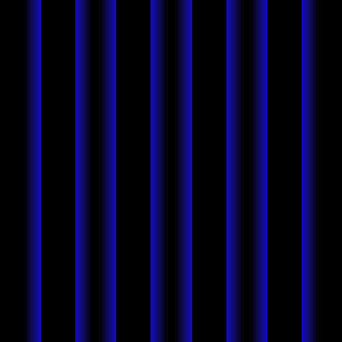 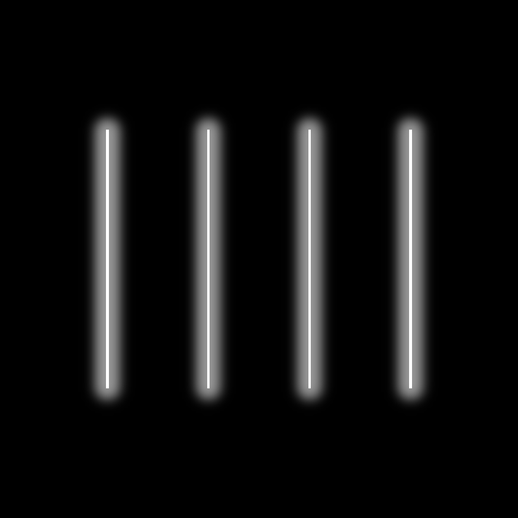And yes, that one with an actual gradient was made with CSS Box Shadows, because I cannot paint gradients for the life of me.